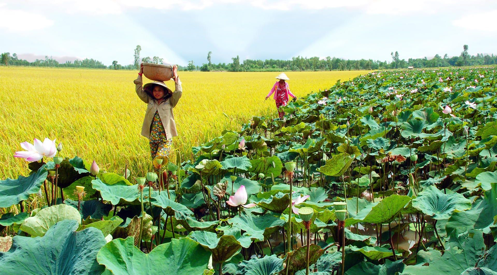

Với diện tích trải rộng ở cả hai bờ sông Tiền, Đồng Tháp nổi tiếng với các cánh đồng lúa trù phú chạy dọc theo những con kênh hiền hòa cùng những cánh rừng nguyên sinh và hồ sen thơm ngát. Không chỉ có thiên nhiên rực rỡ, vùng đất miền Tây Nam Bộ này còn có rất nhiều tọa độ du hí thú vị dành cho hội mê xê dịch. Cùng Tân Trương điểm danh ngay và luôn top 8 địa điểm du lịch Đồng Tháp hấp dẫn nhất nhé!
Đồng Tháp nằm trong khu vực đồng bằng sông Cửu Long, là một trong ba tỉnh của vùng Đồng Tháp Mười, có tổng diện tích 3.374 km², dân số gần 1,7 triệu người; phía bắc giáp Cam-pu-chia, phía nam giáp Vĩnh Long và Cần Thơ, phía tây giáp An Giang, phía đông giáp Long An và Tiền Giang . Đồng Tháp là tỉnh nằm trong vùng trọng điểm về sản xuất lương thực - thực phẩm của cả nước, đứng thứ ba cả nước về tổng sản lượng lúa với trên 3,07 triệu tấn/năm, sản lượng lúa hàng hóa trên 2 triệu tấn. Thủy sản được coi là thế mạnh thứ 2 sau cây lúa. Đồng Tháp hiện là tỉnh đứng đầu cả nước về sản lượng cá tra xuất khẩu.
Tỉnh có hệ thống sông, ngòi, kênh, rạch chằng chịt; nhiều ao, hồ lớn. Sông chính là sông Tiền (một nhánh của sông Mê Kông) chảy qua tỉnh với chiều dài 132km. Dọc theo hai bên bờ sông Tiền là hệ thống kênh rạch dọc ngang. Đường liên tỉnh giao lưu thuận tiện với trên 300km đường bộ và một mạng lưới sông rạch thông thương.
Khí hậu: Đồng Tháp nằm trong vùng khí hậu nhiệt đới, chia 2 mùa rõ rệt: mùa mưa từ tháng 5 đến tháng 11 và mùa khô từ tháng 12 đến tháng 4 năm sau. Nhiệt độ trung bình 26,6ºC.
Dân tộc và tôn giáo:
Ở Đồng Tháp có nhiều tôn giáo như Cao Đài, Hòa Hảo, Phật giáo và Công giáo. Tính cách người dân Đồng Tháp mang đậm nét đặc trưng chung của đồng bằng Nam Bộ: cần cù, hiền lành, phóng khoáng, cởi mở và giàu lòng mến khách.
Giao thông:
- Thành phố Cao Lãnh cách quốc lộ 1A 36km, cách Tp. Hồ Chí Minh 162km. Nằm trên bờ sông Cao Lãnh (một nhánh nhỏ của sông Tiền tách ra sau 15km lại chảy vào sông Tiền), ở ngay sát Đồng Tháp Mười mênh mông, là trung tâm kinh tế của Đồng Tháp.
- Có tuyến xe khách trực tiếp từ Tp. Hồ Chí Minh, Mỹ Tho, Cần Thơ, Vĩnh Long và Long Xuyên tới Cao Lãnh. Thành phố Sa Đéc cách Tp. Hồ Chí Minh 143km, nằm ở nút giao giữa Vĩnh Long và Long Xuyên.
Tiềm năng phát triển du lịch:
- Vùng đất Đồng Tháp Mười ngày xưa nổi tiếng hoang vu với lắm bưng, trần, đìa, bàu, với bạt ngàn đưng, lác, năng, sen, súng và lau, sậy,...Đây là giang sơn của các loài động vật hoang dại như: rắn, rùa, chuột ếch, chim muông, cua, cá sấu.
- Giờ đây về thăm Đồng Tháp du khách như trở về với cội nguồn thiên nhiên bởi bầu không khí trong lành, mát mẻ của những cánh đồng lúa phì nhiêu, đến viếng Khu Di tích Mộ Cụ Phó Bảng Nguyễn Sinh Sắc, đài liệt sĩ, Khu Di tích Gò Tháp, Chùa Kiến An Cung, Vườn Quốc Gia Tràm Chim - Tam Nông, Khu Di tích Xẻo Quít, làng hoa kiểng Tân Qui Đông, các vườn cây ăn trái Cao Lãnh, Châu Thành, Lai Vung, Thạnh Hưng...
Tiềm năng phát triển kinh tế
Đồng Tháp cũng là tỉnh có nhiều quốc lộ đi qua địa bàn, hệ thống giao thông thuận lợi tạo điều kiện để Đồng Tháp kết nối chặt chẽ với thành phố Hồ Chí Minh, Cần Thơ và các tỉnh lân cận, kể cả sang nước bạn Campuchia. Hai nhánh sông Cửu Long là sông Tiền và sông Hậu chảy qua tạo nên hệ thống giao thông bằng đường thủy tại Đồng Tháp rất thuận lợi. Hai bến cảng nằm bên bờ sông Tiền giúp vận chuyển hàng hoá thuận tiện ra biển Đông và Campuchia.
Đồng Tháp có đường biên giới giáp với tỉnh Prây-veng (Campuchia) dài 48 km, trên tuyến biên giới có 02 cửa khẩu quốc tế (Thường Phước và Dinh Bà thuộc Khu Kinh tế cửa khẩu Tỉnh) và 05 cặp cửa khẩu phụ. Đồng Tháp đã ký kết hợp tác tăng cường giao thương với Campuchia, đẩy mạnh khai thác kinh tế cửa khẩu.
Hệ thống Logistics tại Đồng Tháp phát triển đồng bộ, sau khi đưa vào khai thác cảng container Tân Cảng - Sa Đéc, công suất 6.000 TEU/tháng, Tổng Công ty Tân Cảng Sài Gòn sẽ triển khai tiếp nhận container tại cảng Cao Lãnh, đồng thời sẽ làm thủ tục và triển khai đầu tư vào cảng Thường Phước và các bến xếp dỡ container hàng hóa khác như: Tháp Mười sẽ tạo điều kiện thuận lợi cho các khách hàng tại Đồng Tháp xuất nhập khẩu hàng hoá qua các cảng khu vực thành phố Hồ Chí Minh, cụm cảng nước sâu Cái Mép – Thị Vải và tăng cường giao thương với Campuchia. Cục Hải quan tỉnh Đồng Tháp chính thức triển khai thủ tục hải quan điện tử tạo thuận tiện cho việc hoàn tất thủ tục xuất nhập khẩu của doanh nghiệp trên địa bàn tỉnh.
Cơ sở hạ tầng cho công nghiệp của tỉnh được qui hoạch và phát triển đồng bộ. Đồng Tháp đã quy hoạch tổng thể 01 khu kinh tế cửa khẩu, diện tích 31.936 ha, là khu tổng hợp đa ngành, đa lĩnh vực gắn với các cửa khẩu quốc tế, là trung tâm giao lưu phát triển kinh tế giữa các nước tiểu vùng sông Mêkông, đặc biệt là cửa ngõ giao thương với Campuchia; 08 khu công nghiệp với tổng diện tích 1.266 ha, trong đó có 3 khu công nghiệp tập trung (Trần Quốc Toản, Sa Đéc, Sông Hậu) với quy mô lớn đảm bảo về hạ tầng, thuận tiện về giao thông cả đường bộ, đường thủy và thực hiện quy hoạch 31 cụm công nghiệp với tổng diện tích gần 1.500 ha, trong đó có 14 cụm đã được lập quy hoạch chi tiết với diện tích gần 441 ha, trong đó đã triển khai đền bù, giải phóng mặt bằng và đầu tư hạ tầng gần 345 ha, tỉnh đang tiếp tục kêu gọi đầu tư cho 17 cụm với tổng diện tích 617 ha. Các khu, cụm công nghiệp đều có đường điện cao, trung thế và hệ thống nước sạch phục vụ cho nhu cầu sản xuất kinh doanh của các nhà đầu tư.